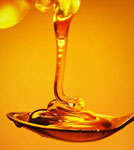
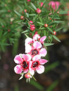
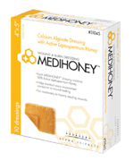

Медоносная пчела (лат. Apis mellifera) производит несколько продуктов, которые используются при лечении различных заболеваний, в том числе пчелиный воск, маточное молочко, прополис, пчелиный яд и мёд. Несмотря на то, что мёд, как правило, воспринимают как продукт питания, он является одним из наиболее изученных пчелиных лекарственных средств.
Медоносная пчела (лат. Apis mellifera) производит несколько продуктов, которые используются при лечении различных заболеваний, в том числе пчелиный воск, маточное молочко, прополис, пчелиный яд и мёд. Несмотря на то, что мёд, как правило, воспринимают как продукт питания, он является одним из наиболее изученных пчелиных лекарственных средств.
В исторических трудах в течение более 4 тысячелетий затрагиваются медицинскме аспекты применения мёда, а также описываются преимущества его употребления внутрь или местного использования. Антимикробные свойства мёда были задокументированы в 1894 г., а приблизительно через 50 лет в американской и европейской литературе появились упоминания о ценных свойствах мёда в лечении ран. Активное использование мёда приостановилось с появлением антибиотиков, что низвело мёд до уровня народных средств в течение нескольких десятилетий.

Научные достижения позволяют лучше понять механизмы заживления ран и биологические эффекты мёда. Физиологическая реакция в ответ на рану включает фазы воспаления, пролиферации и регенерации. Имеется предположение, что мёд благотворно влияет на заживление раны в каждой фазе. Влияя на фазу воспаления, мёд позволяет ограничить распространение инфекции, обладая активностью против многих бактерий, включая Staphylococcus aureus, Escherichia coli и Pseudomonas aeruginosa, а также метициллинорезистентных штаммов S. aureus и ванкомицинорезистентных энтерококков. Однако профилактическое назначение антибиотиков не способствует более быстрому заживлению ран, также как и противомикробное действие мёда не может полностью объяснить его эффективность в заживлении ран.
Действие мёда может зависеть от его способности к активации продукции цитокинов, таких как фактор некроза опухоли, интерлейкины, что способствует удалению инородных частиц из раны и образованию новых кровеносных сосудов. Отличие от некоторых других средств, используемых для раневых повязок, мёд не обладает цитотоксичностью для кератиноцитов и фибробластов, что помогает в заживлении ран. Мёд может способствовать образованию грануляционной ткани и эпителизации, и тем самым сократить сроки заживления раны.
С ростом антибиотикорезистентности и развития лечения ран как медицинской специальности, интерес к мёду для ухода за ранами начал возрождаться. Мёд изучался для лечения как острых ран (например, при ожогах, хирургических и травматических ран), так и хронических ран (например, при хирургической инфекции, пролежнях, язвах нижних конечностей). Многие исследования по использованию меда в лечении ран, как правило, характеризуются низким качеством, отсутствием «ослепления» данных и небольшим размером выборки. Мета-анализ 19 исследований из Кокрановского реестра контролируемых клинических исследований показал, что мёд сокращает время заживления ран при ожогах второй степени, в среднем, на 5 дней по сравнению с обычными перевязочными материалами, однако не способствует ускорению заживления хронических венозных язв на ногах при использовании в сочетании с компрессионными чулками. Учёные ссылаются на недостаток данных для оценки влияния мёда на состояние других острых и хронических ран. Другие систематические обзоры привели к аналогичным выводам.

Мёд-содержащие перевязочные материалы одобрены Управление по контролю за пищевыми продуктами и лекарственными препаратами США (FDA) в качестве медицинских изделий, которые не проходят такую же проверку на безопасность и эффективность, как лекарственные средства. Сорта мёда различаются в зависимости от цветочного происхождения, а особый сорт, лесной мёд манука, зарегистрированный под торговым названием Medihoney™, используется в изготовлении перевязочных материалов. Лесной мёд манука собирается пчелами с часто встречающихся цветков растения Leptospermum scoparium, известного под названиями чайное дерево, манука, мирт и другими; эти деревья распространены в Австралии и Новой Зеландии. Мёд из лептосперума или мануки наиболее хорошо изучен, однако другие сорта также используются в лечении ран, при этом трудно определить, являются ли описанные свойства характерными для всех сортов меда или какого-то конкретного.
Мёд медицинского назначения, одобренный FDA для использования в перевязочных материалах, не аналогичен тому мёду, что мы видим на продуктовых полках магазина. Мёд медицинского назначения был отфильтрован и очищен с помощью гамма-облучения от таких патогенов, как Clostridium botulinum. Нагревание мёда убивает бактерии, но при этом снижает его эффективность.

В заключение, несколько исследований с использованием различных сортов мёда для лечения острых и хронических ран показали улучшение заживления, однако интерпретация результатов имеющихся исследований ограничивается плохим дизайном исследований. Требуется проведение большого рандомизированного слепого контролируемого испытания с достаточным объёмом длительных наблюдений за пациентами, чтобы определить роль мёда в заживлении ран. Пациенты должны быть предупреждены, что мёд медицинского назначения, вероятно, безопаснее для лечения ран, чем пищевой мёд, который может содержать патогенные микроорганизмы. Побочные эффекты мёда при наружном использовании, как правило, слабо выражены; наблюдались локальные кожные реакции и боль.
Список литературы:
- Crane E. The World History of Beekeeping and Honey Hunting. New York: Routledge; 1999.
- Lee DS, Sinno S, Khachemoune A. Honey and wound healing: an overview. Am J Clin Dermatol. 2011;12:181-190.
- O'Meara S, Al-Kurdi D, Ologun Y, Ovington LG. Antibiotics and antiseptics for venous leg ulcers. Cochrane Database Syst Rev. 2010;CD003557.
- Tonks AJ, Cooper RA, Jones KP, Blair S, Parton J, Tonks A. Honey stimulates inflammatory cytokine production from monocytes. Cytokine. 2003;21:242-247.
- Du Toit DF, Page BJ. An in vitro evaluation of the cell toxicity of honey and silver dressings. J Wound Care. 2009;18:383-389.
- Jull AB, Rodgers A, Walker N. Honey as a topical treatment for wounds. Cochrane Database Syst Rev. 2008;CD005083.
- Bardy J, Slevin NJ, Mais KL, Molassiotis A. A systematic review of honey uses and its potential value within oncology care. J Clin Nurs. 2008;17:2604-2623.
- Wijesinghe M, Weatherall M, Perrin K, Beasley R. Honey in the treatment of burns: a systematic review and meta-analysis of its efficacy. N Z Med J. 2009;122:47-60.
- US Food and Drug Administration. FDA issues assessments of the 510(k) program and use of science in decision-making. Accessed August 5, 2012.
- Al-Waili NS, Salom K, Butler G, Al Ghamdi AA. Honey and microbial infections: a review supporting the use of honey for microbial control. J Med Food. 2011;14:1079-1096.
- Biglari B, Moghaddam A, Santos K, et al. Multicentre prospective observational study on professional wound care using honey (Medihoney™). Int Wound J. 2012 Apr 11.